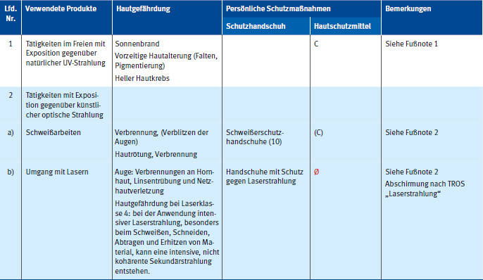

Dieser Abschnitt kann als Hilfestellung bei der Gefährdungsbeurteilung und der Festlegung von Schutzmaßnahmen herangezogen werden. Dazu werden in den nachfolgenden Tabellen 6-3 bis 6-12 typische Hautgefährdungen an Holz- und Metallarbeitsplätzen beschrieben und persönliche Schutzmaßnahmen vorgeschlagen. Die in Tabelle 6-1 erläuterten Abkürzungen für Schutzhandschuhe sowie die in Tabelle 6-2 aufgeführten Buchstaben für die Einsatzbereiche von Hautschutzmitteln werden verwendet.
Es muss entsprechend der Gefährdungsbeurteilung geprüft werden, ob die aufgeführten Schutzmaßnahmen für die konkrete Tätigkeit geeignet sind. Die Schutzmaßnahmen müssen für die konkreten Gefährdungen des betrachteten Arbeitsplatzes ausgewählt und umgesetzt werden.
Besonders zu beachten:
Tabelle 6-1 Schutzhandschuhe – Einteilung nach Eigenschaften

Tabelle 6-2 Hautschutzmittel – Einteilung nach Einsatzbereichen

Tabelle 6-3 Hautgefährdung und Maßnahmen bei Montage- und Instandhaltungsarbeiten
∅= Hautschutzmittel nicht geeignet
Buchstabe in Klammern bedeutet: Mögliche Maßnahme, wenn keine Schutzhandschuhe getragen werden dürfen oder können.
Die Wirksamkeit des Hautschutzmittels muss für die jeweilige Exposition mit einem geeigneten Wirksamkeitsnachweis belegt sein.
a) Instandhaltung und Montage allgemein

b) Maschinen-Instandhaltung

c) Kfz-Instandhaltung

Tabelle 6-4 Hautgefährdung und Maßnahmen bei der Teilereinigung und Entfettung

1) Spritzschutz, nicht bei Essigsäureestern
2) Bei Estern und Ketonen
Tabelle 6-5 Hautgefährdung und Maßnahmen bei Tätigkeiten mit Kühlschmierstoffen

Tabelle 6-6 Hautgefährdung und Maßnahmen bei der Oberflächenbeschichtung


Fußnote 1)
• Lacke maschinell in geschlossenen Behältnissen mischen.
• Mischarbeiten grundsätzlich an Sonderplätzen ausführen. Dort sind Hilfswerkzeuge und persönliche Schutzausrüstungen für alle dort Beschäftigten bereitzuhalten.
• Lacke nur mit Hilfsmitteln, ausreichender Lüftung und geeigneter persönlicher Schutzausrüstung verarbeiten. Sicherheitsdatenblatt beachten.
• Verschüttetes Gut sofort mit Papiertüchern aufnehmen.
• Beim elektrostatischen Lackieren keine isolierenden Schutzhandschuhe benutzen.
Fußnote 2)
• Automatische Dosiereinrichtungen in geschlossenem Betrieb verwenden.
• Zugangsbereich absichern.
• Waschgelegenheit in unmittelbarer Nähe einrichten.
• Erste-Hilfe-Einrichtungen bereitstellen.
Tabelle 6-7 Hautgefährdung und Maßnahmen in der Galvanik
Das Verwenden von Hautschutzmitteln bei Tätigkeiten in der Galvanik ist keine geeignete Schutzmaßnahme. Es werden daher nur potentiell geeignete Handschuhmaterialien benannt.
Die angegebenen Materialien beziehen sich ausschließlich auf Chemikalienschutzhandschuhe (Kat. 3). Lederhandschuhe und beschichtete Strickhandschuhe sind nicht geeignet.
Bei allen aufgeführten Chemikalien sind wanddünne Handschuhe (Einweghandschuhe) nicht geeignet.
Die Angaben zur Eignung der Handschuhmaterialien beziehen sich auf Raumtemperatur (23 °C). Eine Erhöhung der Temperatur kann zu einer erheblichen Verringerung der chemischen Beständigkeit führen (Faustregel: eine Temperaturerhöhung um 10 °C verringert die chemische Beständigkeit auf die Hälfte). Die Angaben der Hersteller sind zu beachten. Bei Substanzgemischen ist der Handschuhhersteller mit einzubeziehen.
a) Vorbehandlung


b) Beschichtungsverfahren


Tabelle 6-8 Hautgefährdung und Maßnahmen in der Gießerei
a) Modellbau

b) Cold-Box-Verfahren

c) SO2-Verfahren (Hardox) und Kaltharzverfahren (Formverfahren und Kernherstellung)

d) Hot-Box-Verfahren

Tabelle 6-9 Hautgefährdung und Maßnahmen in der Härterei

Tabelle 6-10 Hautgefährdung und Maßnahmen beim Verarbeiten von Klebstoffen und Dichtungsmassen

Tabelle 6-11 Hautgefährdung und Maßnahmen bei der Holzbe- und –verarbeitung
Anmerkung:
Für detaillierte Informationen zu den Produkten/Produktgruppen, den Gesundheitsgefahren und den erforderlichen Schutzmaßnahmen sowie möglichen Ersatzstoffen (Gefährdungsbeurteilung) wird auf WINGIS-Online und die dortigen Informationen zu Abbeizern, Dichtstoffen, Holzschutzmitteln, Parkettklebern, Versiegelungen etc. verwiesen: https://wingisonline.de.


Tabelle 6-12 Hautgefährdung und Maßnahmen bei UV-Exposition

Fußnote 1)
• Vorrangig müssen technische Schutzmaßnahmen getroffen werden; zum Beispiel bauliche Maßnahmen wie Überdachungen.
• Gegebenenfalls können auch organisatorische Schutzmaßnahmen ergriffen werden, zum Beispiel eine Beschränkung der Expositionsdauer durch einen früheren Arbeitsbeginn oder eine Verschiebung der Arbeiten in eine weniger sonnige Tageszeit. Mittagssonne (10-15 Uhr) vermeiden.
• Körperbedeckende Kleidung und Kopfbedeckung mit Nackenschutz tragen. Nie mit freiem Oberkörper arbeiten.
• Unbekleidete Körperstellen (Gesicht, Ohren, unbekleideter Nacken) müssen mit UV-Schutzmitteln eingecremt werden. Es ist auf einen ausreichend hohen Lichtschutzfaktor zu achten (mindestens LSF 30, möglichst LSF 50+). Das UV-Schutzmittel muss vor UVB- und UVA-Strahlung schützen und sollte wasserfest sein.
Fußnote 2)
• Entstehung und Ausbreitung künstlicher optischer Strahlung vorrangig an der Quelle, Reduktion auf ein Minimum
• Einhalten von Expositionsgrenzwerten
• Technische Maßnahmen (z. B. Trennwände, Sichtscheiben mit Filter) haben Vorrang vor organisatorischen und individuellen Maßnahmen.
• Individuelle Maßnahmen: Kopfschutz, z. B. Schweißerschutzschild, Visier, Schutzhaube mit Schutz der Augen, Handschuhe, Schuhe mit Fußgamaschen, Nackenleder zum Schutz gegen Streustrahlung, geeigneter Hautschutz, wenn die zuvor genannten Maßnahmen nicht angewendet werden können